Voraussetzungen: 64-Bit-Rechner (bei alten 32-Bit-Rechnern kann man z. B. Debian-Linux anstelle von openSUSE verwenden).
openSUSE installieren
-
openSUSE Leap 42.1 DVD-Image herunterladen (mit Direkt-Link oder BitTorrent)
-
Die .iso-Datei auf DVD brennen (alternativ: auf einen weiteren USB-Stick "bootable" speichern).
-
Das Medium wird nur zur Installation benötigt. Die Updates und neue Pakete kann man via Paketmanager direkt aus dem Internet laden.
-
-
USB-Stick, auf dem das System installiert werden soll:
-
empfohlene Größe: 32 GB
-
auf USB 3.0 achten (auch drauf achten, dass manchmal USB 3.0 draufsteht, obwohl der Speicher dennoch langsam ist)
-
Alternativ: externe Festplatte; diese hat eine verlässlichere Übertragungsrate
-
-
Von DVD (oder dem Boot-Stick) booten und das openSUSE-Setup durchführen
-
Bei der Partitionierung folgende Einteilung vornehmen
-
Eingebaute Platte: /dev/sda (nicht verwenden!), aber dafür /dev/sdb (wenn das der Stick ist)
-
10 GB root (/) EXT4 - Systemdateien
-
2 GB swap - Auslagerungsplatz
-
14 GB /home EXT4 - Benutzerdaten
-
2 GB FAT32 - Auf diesen Bereich kann man dann auch unter Windows zugreifen.
-
Achtung: möglicherweise muss diese Partition ganz an den Anfang, damit es wirklich funktioniert.
-
-
-
Hinweis: Dieses so installierte System funktioniert möglicherweise auf anderes konfigurierter Hardware (z. B. unterschiedliche Anzahl von eingebauten Festplatten) nicht.
Datenträger-Auswahl
-
Ein Betriebssystem schreibt oft viele kleine Dateien. Das heißt, der Datenträger sollte, neben einer allgemeinen hohen Datenrate, besonders bei kleinen Dateien schnell sein.
-
Empfehlung derzeit (Stand 16.06.2016)
-
USB-Stick 32 GB SanDisk Ultra Fit (14 EUR)
-
Benchmark-Beispiele erstellt mit GNOME Disks:
1a-USB3.0-HardDrive-500GB-100samples-1MB: 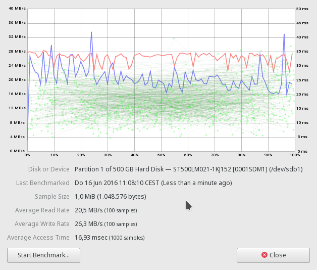
2a-USB3.0-Stick-16GB-100samples-1MB-Test-dauerte-10x-länger-als-1: 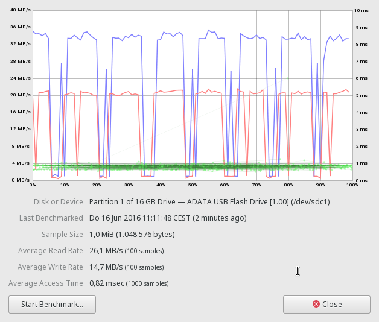
3a-Interne-SSD-500GB-100samples-1MB: 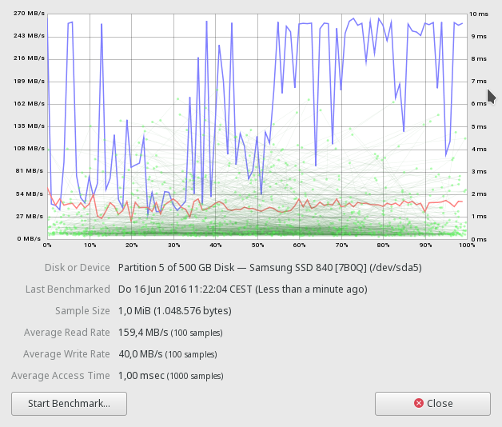
3c-Interne-SSD-500GB-10samples-100MB: 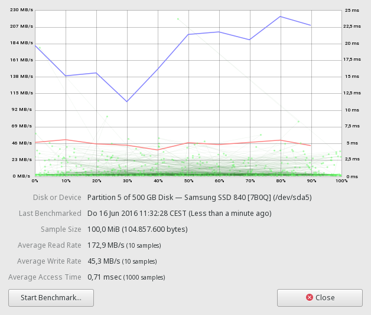
4a-USB2.0-HardDrive-80GB-100samples-1MB: 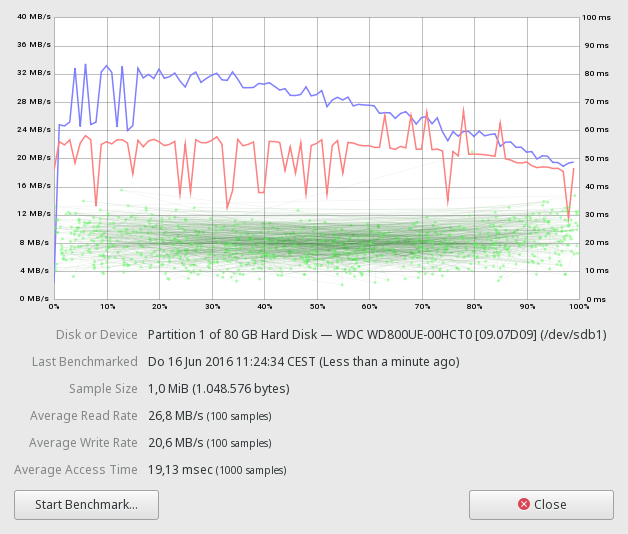
5a-USB2.0-Stick-1GB-100samples-1MB: 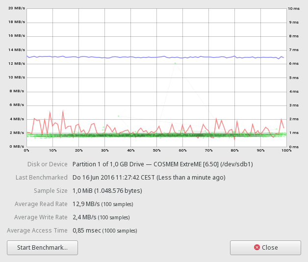
6a-USB2.0-Stick-4GB-10samples-10MB: 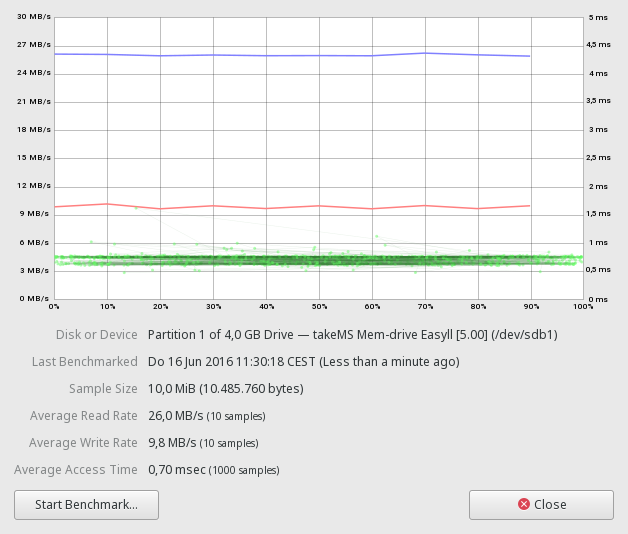
6b-USB2.0-Stick-4GB-100samples-1MB: 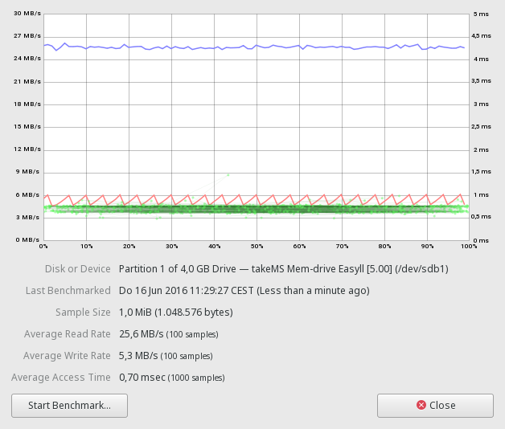
7a-USB-ScanDisk-Ultra-Fit-32-GB: 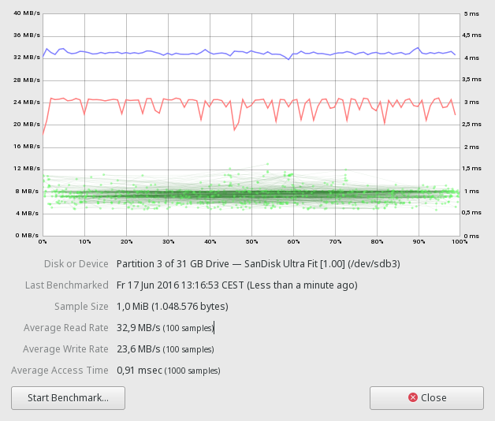
8a-USB-Stick-32GB-Kingston-Data-Traveler.png 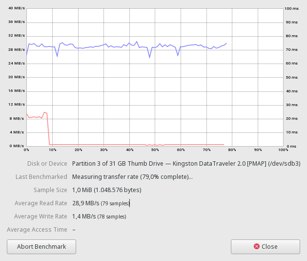
9a-USB-Stick-32-GB-Toshiba: 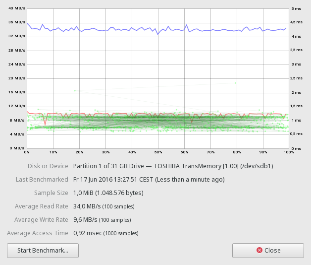